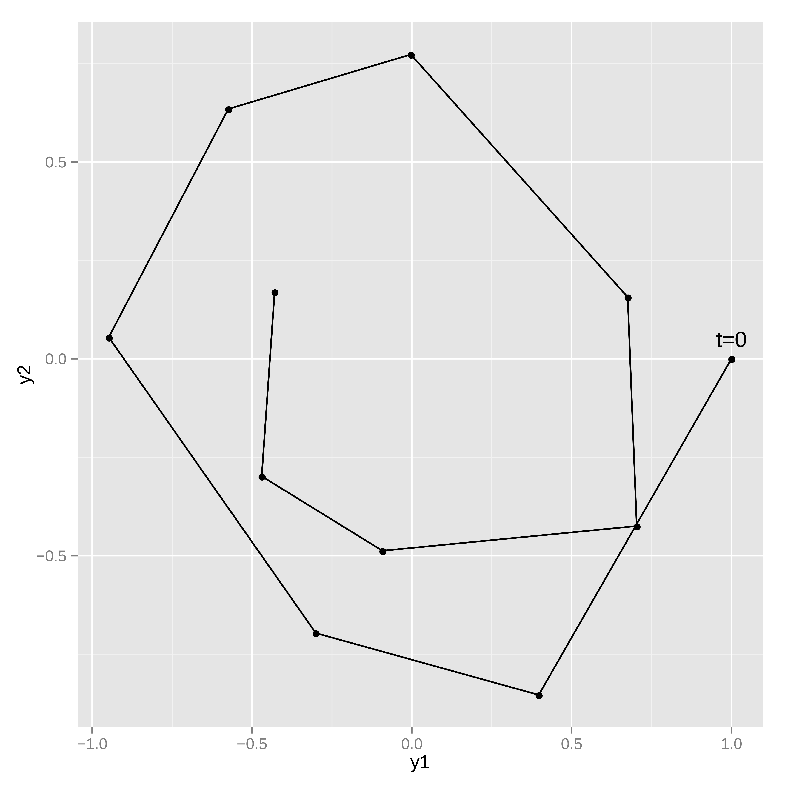

Ordinary Differential Equations
Stan provides a number of different methods for solving systems of ordinary differential equations (ODEs). All of these methods adaptively refine their solutions in order to satisfy given tolerances, but internally they handle calculations quite a bit differently.
Because Stan’s algorithms requires gradients of the log density, the ODE solvers must not only provide the solution to the ODE itself, but also the gradient of the ODE solution with respect to parameters (the sensitivities). Two fundamentally different approaches are available in Stan to solve this problem, each having very different computational cost depending on the number of ODE states \(N\) and the number of parameters \(M\) being used:
A forward sensitivity solver expands the base ODE system with additional ODE equations for the gradients of the solution. For each parameter, an additional full set of \(N\) sensitivity states are added meaning that the full ODE solved has \(N \, + N \cdot M\) states.
An adjoint sensitivity solver starts by solving the base ODE system forward in time to get the ODE solution and then solves another ODE system (the adjoint) backward in time to get the gradients. The forward and reverse solves both have \(N\) states each. There is additionally one quadrature problem solved for every parameter.
The adjoint sensitivity approach scales much better than the forward sensitivity approach. Whereas the computational cost of the forward approach scales multiplicatively in the number of ODE states \(N\) and parameters \(M\), the adjoint sensitivity approach scales linear in states \(N\) and parameters \(M\). However, the adjoint problem is harder to configure and the overhead for small problems actually makes it slower than solving the full forward sensitivity system. With that in mind, the rest of this introduction focuses on the forward sensitivity interfaces. For information on the adjoint sensitivity interface see the Adjoint ODE solver
Two interfaces are provided for each forward sensitivity solver: one with default tolerances and default max number of steps, and one that allows these controls to be modified. Choosing tolerances is important for making any of the solvers work well – the defaults will not work everywhere. The tolerances should be chosen primarily with consideration to the scales of the solutions, the accuracy needed for the solutions, and how the solutions are used in the model. For instance, if a solution component slowly varies between 3.0 and 5.0 and measurements of the ODE state are noisy, then perhaps the tolerances do not need to be as tight as for a situation where the solutions vary between 3.0 and 3.1 and very high precision measurements of the ODE state are available. It is also often useful to reduce the absolute tolerance when a component of the solution is expected to approach zero. For information on choosing tolerances, see the control parameters section.
The advantage of adaptive solvers is that as long as reasonable tolerances are provided and an ODE solver well-suited to the problem is chosen the technical details of solving the ODE can be abstracted away. The catch is that it is not always clear from the outset what reasonable tolerances are or which ODE solver is best suited to a problem. In addition, as changes are made to an ODE model, the optimal solver and tolerances may change.
With this in mind, the four forward solvers are rk45, bdf, adams, and ckrk. If no other information about the ODE is available, start with the rk45 solver. The list below has information on when each solver is useful.
If there is any uncertainty about which solver is the best, it can be useful to measure the performance of all the interesting solvers using profile statements. It is difficult to always know exactly what solver is the best in all situations, but a profile can provide a quick check.
rk45: a fourth and fifth order Runge-Kutta method for non-stiff systems (Dormand and Prince 1980; Ahnert and Mulansky 2011).rk45is the most generic solver and should be tried first.bdf: a variable-step, variable-order, backward-differentiation formula implementation for stiff systems (Cohen and Hindmarsh 1996; Serban and Hindmarsh 2005).bdfis often useful for ODEs modeling chemical reactions.adams: a variable-step, variable-order, Adams-Moulton formula implementation for non-stiff systems (Cohen and Hindmarsh 1996; Serban and Hindmarsh 2005). The method has order up to 12, hence is commonly used when high-accuracy is desired for a very smooth solution, such as in modeling celestial mechanics and orbital dynamics (Montenbruck and Gill 2000).ckrk: a fourth and fifth order explicit Runge-Kutta method for non-stiff and semi-stiff systems (Cash and Karp 1990; Mazzia, Cash, and Soetaert 2012). The difference betweenckrkandrk45is thatckrkshould perform better for systems that exhibit rapidly varying solutions. Often in those situations the derivatives become large or even nearly discontinuous, andckrkis designed to address such problems.
For a discussion of stiff ODE systems, see the stiff ODE section. For information on the adjoint sensitivity interface see the Adjoint ODE solver section. The function signatures for Stan’s ODE solvers can be found in the function reference manual section on ODE solvers.
Notation
An ODE is defined by a set of differential equations, \(y(t, \theta)' = f(t, y, \theta)\), and initial conditions, \(y(t_0, \theta) = y_0\). The function \(f(t, y, \theta)\) is called the system function. The \(\theta\) dependence is included in the notation for \(y(t, \theta)\) and \(f(t, y, \theta)\) as a reminder that the solution is a function of any parameters used in the computation.
Example: simple harmonic oscillator
As an example of a system of ODEs, consider a harmonic oscillator. In a harmonic oscillator a particle disturbed from equilibrium is pulled back towards its equilibrium position by a force proportional to its displacement from equilibrium. The system here additionally has a friction force proportional to particle speed which points in the opposite direction of the particle velocity. The system state will be a pair \(y = (y_1, y_2)\) representing position and speed. The change in the system with respect to time is given by the following differential equations.1
\[\begin{align*} &\frac{d}{dt} y_1 = y_2 \\ &\frac{d}{dt} y_2 = -y_1 - \theta y_2 \end{align*}\]
The state equations implicitly defines the state at future times as a function of an initial state and the system parameters.
Coding the ODE system function
The first step in coding an ODE system in Stan is defining the ODE system function. The system functions require a specific signature so that the solvers know how to use them properly.
The first argument to the system function is time, passed as a real; the second argument to the system function is the system state, passed as a vector, and the return value from the system function are the current time derivatives of the state defined as a vector. Additional arguments can be included in the system function to pass other information into the solve (these will be passed through the function that starts the ODE integration). These argument can be parameters (in this case, the friction coefficient), data, or any quantities that are needed to define the differential equation.
The simple harmonic oscillator can be coded using the following function in Stan (see the user-defined functions chapter for more information on coding user-defined functions).
vector sho(real t, // time
vector y, // state
real theta) { // friction parameter
vector[2] dydt;
dydt[1] = y[2];
dydt[2] = -y[1] - theta * y[2];
return dydt;
}The function takes in a time t (a real), the system state y (a vector), and the parameter theta (a real). The function returns a vector of time derivatives of the system state at time t, state y, and parameter theta. The simple harmonic oscillator coded here does not have time-sensitive equations; that is, t does not show up in the definition of dydt, however it is still required.
Strict signature
The types in the ODE system function are strict. The first argument is the time passed as a real, the second argument is the state passed as a vector, and the return type is a vector. A model that does not have this signature will fail to compile. The third argument onwards can be any type, granted all the argument types match the types of the respective arguments in the solver call.
All of these are possible ODE signatures:
vector myode1(real t, vector y, real a0);
vector myode2(real t, vector y, array[] int a0, vector a1);
vector myode3(real t, vector y, matrix a0, array[] real a1, row_vector a2);but these are not allowed:
vector myode1(real t, array[] real y, real a0);
// Second argument is not a vector
array[] real myode2(real t, vector y, real a0);
// Return type is not a vector
vector myode3(vector y, real a0);
// First argument is not a real and second is not a vectorMeasurement error models
Noisy observations of the ODE state can be used to estimate the parameters and/or the initial state of the system.
Simulating noisy measurements
As an example, suppose the simple harmonic oscillator has a parameter value of \(\theta = 0.15\) and an initial state \(y(t = 0, \theta = 0.15) = (1, 0)\). Assume the system is measured at 10 time points, \(t = 1, 2, \cdots, 10\), where each measurement of \(y(t, \theta)\) has independent \(\textsf{normal}(0, 0.1)\) error in both dimensions (\(y_1(t, \theta)\) and \(y_2(t, \theta)\)).
The following model can be used to generate data like this:
functions {
vector sho(real t,
vector y,
real theta) {
vector[2] dydt;
dydt[1] = y[2];
dydt[2] = -y[1] - theta * y[2];
return dydt;
}
}
data {
int<lower=1> T;
vector[2] y0;
real t0;
array[T] real ts;
real theta;
}
model {
}
generated quantities {
array[T] vector[2] y_sim = ode_rk45(sho, y0, t0, ts, theta);
// add measurement error
for (t in 1:T) {
y_sim[t, 1] += normal_rng(0, 0.1);
y_sim[t, 2] += normal_rng(0, 0.1);
}
}The system parameters theta and initial state y0 are read in as data along with the initial time t0 and observation times ts. The ODE is solved for the specified times, and then random measurement errors are added to produce simulated observations y_sim. Because the system is not stiff, the ode_rk45 solver is used.
This program illustrates the way in which the ODE solver is called in a Stan program,
array[T] vector[2] y_sim = ode_rk45(sho, y0, t0, ts, theta);this returns the solution of the ODE initial value problem defined by system function sho, initial state y0, initial time t0, and parameter theta at the times ts. The call explicitly specifies the non-stiff RK45 solver.
The parameter theta is passed unmodified to the ODE system function. If there were additional arguments that must be passed, they could be appended to the end of the ode call here. For instance, if the system function took two parameters, \(\theta\) and \(\beta\), the system function definition would look like:
vector sho(real t, vector y, real theta, real beta) { ... }and the appropriate ODE solver call would be:
ode_rk45(sho, y0, t0, ts, theta, beta);Any number of additional arguments can be added. They can be any Stan type (as long as the types match between the ODE system function and the solver call).
Because all none of the input arguments are a function of parameters, the ODE solver is called in the generated quantities block. The random measurement noise is added to each of the T outputs with normal_rng.

Estimating system parameters and initial state
These ten noisy observations of the state can be used to estimate the friction parameter, \(\theta\), the initial conditions, \(y(t_0, \theta)\), and the scale of the noise in the problem. The full Stan model is:
functions {
vector sho(real t,
vector y,
real theta) {
vector[2] dydt;
dydt[1] = y[2];
dydt[2] = -y[1] - theta * y[2];
return dydt;
}
}
data {
int<lower=1> T;
array[T] vector[2] y;
real t0;
array[T] real ts;
}
parameters {
vector[2] y0;
vector<lower=0>[2] sigma;
real theta;
}
model {
array[T] vector[2] mu = ode_rk45(sho, y0, t0, ts, theta);
sigma ~ normal(0, 2.5);
theta ~ std_normal();
y0 ~ std_normal();
for (t in 1:T) {
y[t] ~ normal(mu[t], sigma);
}
}Because the solves are now a function of model parameters, the ode_rk45 call is now made in the model block. There are half-normal priors on the measurement error scales sigma, and standard normal priors on theta and the initial state vector y0. The solutions to the ODE are assigned to mu, which is used as the location for the normal observation model.
As with other regression models, it’s easy to change the noise model to something with heavier tails (e.g., Student-t distributed), correlation in the state variables (e.g., with a multivariate normal distribution), or both heavy tails and correlation in the state variables (e.g., with a multivariate Student-t distribution).
Stiff ODEs
Stiffness is a numerical phenomena that causes some differential equation solvers difficulty, notably the Runge-Kutta RK45 solver used in the examples earlier. The phenomena is common in chemical reaction systems, which are often characterized by having multiple vastly different time-scales. The stiffness of a system can also vary between different parts of parameter space, and so a typically non-stiff system may exhibit stiffness occasionally. These sorts of difficulties can occur more frequently with loose priors or during warmup.
Stan provides a specialized solver for stiff ODEs (Cohen and Hindmarsh 1996; Serban and Hindmarsh 2005). An ODE system is specified exactly the same way with a function of exactly the same signature. The only difference is in the call to the solver the rk45 suffix is replaced with bdf, as in
ode_bdf(sho, y0, t0, ts, theta);Using the stiff (bdf) solver on a system that is not stiff may be much slower than using the non-stiff (rk45) solver because each step of the stiff solver takes more time to compute. On the other hand, attempting to use the non-stiff solver for a stiff system will cause the timestep to become very small, leading the non-stiff solver taking more time overall even if each step is easier to compute than for the stiff solver.
If it is not known for sure that an ODE system is stiff, run the model with both the rk45 and bdf solvers and see which is faster. If the rk45 solver is faster, then the problem is probably non-stiff, and then it makes sense to try the adams solver as well. The adams solver uses higher order methods which can take larger timesteps than the rk45 solver, though similar to the bdf solver each of these steps is more expensive to compute.
Control parameters for ODE solving
For additional control of the solves, both the stiff and non-stiff forward ODE solvers have function signatures that makes it possible to specify the relative_tolerance, absolute_tolerance, and max_num_steps parameters. These are the same as the regular function names but with _tol appended to the end. All three control arguments must be supplied with this signature (there are no defaults).
array[T] vector[2] y_sim = ode_bdf_tol(sho, y0, t0, ts,
relative_tolerance,
absolute_tolerance,
max_num_steps,
theta);relative_tolerance and absolute_tolerance control accuracy the solver tries to achieve, and max_num_steps specifies the maximum number of steps the solver will take between output time points before throwing an error.
The control parameters must be data variables – they cannot be parameters or expressions that depend on parameters, including local variables in any block other than transformed data and generated quantities. User-defined function arguments may be qualified as only allowing data arguments using the data qualifier.
For the RK45 and Cash-Karp solvers, the default values for relative and absolute tolerance are both \(10^{-6}\) and the maximum number of steps between outputs is one million. For the BDF and Adams solvers, the relative and absolute tolerances are \(10^{-10}\) and the maximum number of steps between outputs is one hundred million.
Discontinuous ODE system function
If there are discontinuities in the ODE system function, it is best to integrate the ODE between the discontinuities, stopping the solver at each one, and restarting it on the other side.
Nonetheless, the ODE solvers will attempt to integrate over discontinuities they encounters in the state function. The accuracy of the solution near the discontinuity may be problematic (requiring many small steps). An example of such a discontinuity is a lag in a pharmacokinetic model, where a concentration is zero for times \(0 < t < t'\) and then positive for \(t \geq t'\). In this example example, we would use code in the system such as
if (t < t_lag) {
return [0, 0]';
} else {
// ... return non-zero vector...
}In general it is better to integrate up to t_lag in one solve and then integrate from t_lag onwards in another. Mathematically, the discontinuity can make the problem ill-defined and the numerical integrator may behave erratically around it.
If the location of the discontinuity cannot be controlled precisely, or there is some other rapidly change in ODE behavior, it can be useful to tell the ODE solver to produce output in the neighborhood. This can help the ODE solver avoid indiscriminately stepping over an important feature of the solution.
Tolerance
The relative tolerance RTOL and absolute tolerance ATOL control the accuracy of the numerical solution. Specifically, when solving an ODE with unknowns \(y=(y_1,\dots,y_n)^T\), at every step the solver controls estimated local error \(e=(e_1,\dots,e_n)^T\) through its weighted root-mean-square norm (Serban and Hindmarsh (2005), Hairer, Nørsett, and Wanner (1993))
\[\begin{equation*} \sqrt{\sum_{i=1}^n{\frac{1}{n}\frac{e_i^2}{(\text{RTOL}\times y_i + \text{ATOL})^2}}} < 1 \end{equation*}\] by reducing the stepsize when the inequality is not satisfied.
To understand the roles of the two tolerances it helps to assume \(y\) at opposite scales in the above expression: on one hand the absolute tolerance has little effect when \(y_i \gg 1\), on the other the relative tolerance can not affect the norm when \(y_i = 0\). Users are strongly encouraged to carefully choose tolerance values according to the ODE and its application. One can follow Brenan, Campbell, and Petzold (1995) for a rule of thumb: let \(m\) be the number of significant digits required for \(y\), set \(\text{RTOL}=10^{-(m+1)}\), and set ATOL at which \(y\) becomes insignificant. Note that the same weighted root-mean-square norm is used to control nonlinear solver convergence in bdf and adams solvers, and the same tolerances are used to control forward sensitivity calculation. See Serban and Hindmarsh (2005) for details.
Maximum number of steps
The maximum number of steps can be used to stop a runaway simulation. This can arise in when MCMC moves to a part of parameter space very far from where a differential equation would typically be solved. In particular this can happen during warmup. With the non-stiff solver, this may happen when the sampler moves to stiff regions of parameter space, which will requires small step sizes.
Adjoint ODE solver
The adjoint ODE solver method differs mathematically from the forward ODE solvers in the way gradients of the ODE solution are obtained. The forward ODE approach augments the original ODE system with \(N\) additional states for each parameter for which gradients are needed. If there are \(M\) parameters for which sensitivities are required, then the augmented ODE system has a total of \(N \cdot (M + 1)\) states. This can result in very large ODE systems through the multiplicative scaling of the computational effort needed.
In contrast, the adjoint ODE solver integrates forward in time a system of \(N\) equations to compute the ODE solution and then integrates backwards in time another system of \(N\) equations to get the sensitivities. Additionally, for \(M\) parameters there are \(M\) additional equations to integrate during the backwards solve. Because of this the adjoint sensitivity problem scales better in parameters than the forward sensitivity problem. The adjoint solver in Stan uses CVODES (the same as the bdf and adams forward sensitivity interfaces).
The solution computed in the forward integration is required during the backward integration. CVODES uses a checkpointing scheme that saves the forward solver state regularly. The number of steps between saving checkpoints is configurable in the interface. These checkpoints are then interpolated during the backward solve using one of two interpolation schemes.
The solver type (either bdf or adams) can be individually set for both the forward and backward solves.
The tolerances for each phase of the solve must be specified in the interface. Note that the absolute tolerance for the forward and backward ODE integration phase need to be set for each ODE state separately. The harmonic oscillator example call from above becomes:
array[T] vector[2] y_sim
= ode_adjoint_tol_ctl(sho, y0, t0, ts,
relative_tolerance/9.0, // forward tolerance
rep_vector(absolute_tolerance/9.0, 2), // forward tolerance
relative_tolerance/3.0, // backward tolerance
rep_vector(absolute_tolerance/3.0, 2), // backward tolerance
relative_tolerance, // quadrature tolerance
absolute_tolerance, // quadrature tolerance
max_num_steps,
150, // number of steps between checkpoints
1, // interpolation polynomial: 1=Hermite, 2=polynomial
2, // solver for forward phase: 1=Adams, 2=BDF
2, // solver for backward phase: 1=Adams, 2=BDF
theta);For a detailed information on each argument please see the Stan function reference manual.
Solving a system of linear ODEs using a matrix exponential
Linear systems of ODEs can be solved using a matrix exponential. This can be considerably faster than using one of the ODE solvers.
The solution to \(\frac{d}{dt} y = ay\) is \(y = y_0e^{at}\), where the constant \(y_0\) is determined by boundary conditions. We can extend this solution to the vector case: \[ \frac{d}{dt}y = A \, y \] where \(y\) is now a vector of length \(n\) and \(A\) is an \(n\) by \(n\) matrix. The solution is then given by: \[ y = e^{tA} \, y_0 \] where the matrix exponential is formally defined by the convergent power series: \[ e^{tA} = \sum_{n=0}^{\infty} \dfrac{tA^n}{n!} = I + tA + \frac{t^2A^2}{2!} + \dotsb \]
We can apply this technique to the simple harmonic oscillator example, by setting \[ y = \begin{bmatrix} y_1 \\ y_2 \end{bmatrix} \qquad A = \begin{bmatrix} 0 & 1 \\ -1 & -\theta \end{bmatrix} \]
The Stan model to simulate noisy observations using a matrix exponential function is given below.
In general, computing a matrix exponential will be more efficient than using a numerical solver. We can however only apply this technique to systems of linear ODEs.
data {
int<lower=1> T;
vector[2] y0;
array[T] real ts;
array[1] real theta;
}
model {
}
generated quantities {
array[T] vector[2] y_sim;
matrix[2, 2] A = [[ 0, 1],
[-1, -theta[1]]]
for (t in 1:T) {
y_sim[t] = matrix_exp((t - 1) * A) * y0;
}
// add measurement error
for (t in 1:T) {
y_sim[t, 1] += normal_rng(0, 0.1);
y_sim[t, 2] += normal_rng(0, 0.1);
}
}This Stan program simulates noisy measurements from a simple harmonic oscillator. The system of linear differential equations is coded as a matrix. The system parameters theta and initial state y0 are read in as data along observation times ts. The generated quantities block is used to solve the ODE for the specified times and then add random measurement error, producing observations y_sim. Because the ODEs are linear, we can use the matrix_exp function to solve the system.
References
Footnotes
This example is drawn from the documentation for the Boost Numeric Odeint library (Ahnert and Mulansky 2011), which Stan uses to implement the
rk45andckrksolver.↩︎